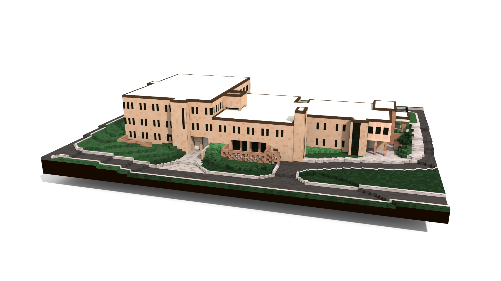
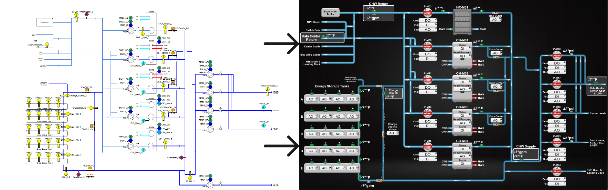
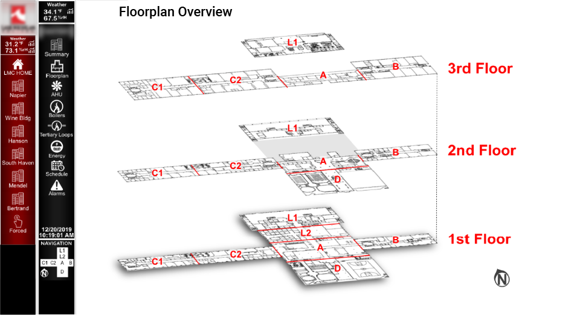
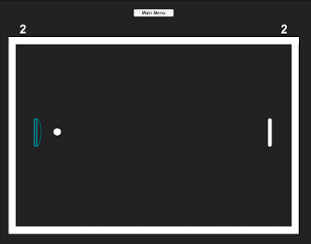

Hobbies
Drumming

Drumming has been my preferred form of expression since I was 10. Sitting down at my first drum set, sticks
in hand, I remember a sense of exhilaration while discovering all the sounds that could be made with just a
handful of drums and cymbals. The physicality of it was cathartic and left me feeling relaxed and satisfied.
I only recently learned that drumming actually impacts your
brain functioning
in the areas responsible for perception, memory, speech, decision making, and much more.
Video Editing

Editing can make or break a story. It sets the tone, controls the mood, and deliberately guides the viewer's
emotions through every twist and turn. According to Alfred Hitchcock, "creation is based on an exact science
of audience reactions" so anticipating audience expectations is key. Editing is a series of tiny, calculated
choices that either add to or take away from the journey; a good editor is empathetic enough to tell the
difference. The next time you watch your favorite movie you can thank the editors for thinking of you.
Games

I love games! Its a great chance to unwind, goof around with friends and familiy, and keep your mind sharp.
Games are proven to increase your muscle control, memory, perception, and spatial navigation. From board
games to video games, you can boost your brain's grey matter just by playing more.
Writing

Writing is an excellent creative outlet. Whether you're into short stories or journaling, taking time to put
your thoughts and ideas down on paper will bring peace to your mind, calm your thoughts and emotions, and can
ease your stress. You're even left with something unique to share with others. You can read one of my short
stories
here.
Now that you know a bit about me, check out some of my
projects!
The Great Tree

Long ago,
deep in the mountains, perched atop the highest cliff, where the Wind howled and raged in protest, there
lived a Tree. She was one of the Great Trees, reaching dangerously, rebelliously into the face of the Wind
and right over the cliff’s edge. Strong and beautiful. But beautiful is too shallow a word for her. This
Tree had true Beauty.
The Tree lived upon the cliff for as long as anyone can remember. Some say hundreds, perhaps thousands of
years. It was a hard life for the Tree, who was relentlessly battered and beaten by the Wind. Her leaves
were ripped and sparse, her branches broken and twisted, her trunk knotted and gnarled. But all those who
knew the Tree said her Beauty was something that could be felt. It would resonate inside you like the
vibrous rumble of thunder, or when one hears the truth spoken after years of lies. Whispers of hope spread,
saying that the Tree even gave Beauty to those who journeyed to see her.
One by one they sought out the Tree hoping she would reveal some secret to becoming beautiful. But they were
each surprised. For when they approached the Tree their minds were silenced by the weight of all her years,
the sorrow of all her scars, the power of her steady strength, the joy of all her outstretched branches. But
what they remembered most of all was feeling their burdens lift and their lies fall away at being seen by
the Tree. She could see and feel many things from high up on the cliff, and knew many things. But the Tree
did not use this to cast judgement on them. Instead, she lent them her sight and shamelessly shared with
them her wounds and scars. It was in the Tree’s acceptance and openness that the people felt her saying ‘I
see You, and You are Enough’. This, above all else, compelled them to go see the world, and themselves,
anew. In this way, the people’s adoration of the Tree spread.
But all this time the Wind was there watching, trying to dissuade the people from climbing the steep path up
the cliff. Seeing the people adore her Strength and Beauty made him jealous. Couldn’t they see through
her lies?
“I am the one who ripped her leaves, broke her branches and twisted her trunk!”, wailed the Wind. “I am the
one they should be thanking! I am the one they should adore! If they think she is beautiful because of her
strength to survive then I will show them what real strength it took to create that accursed Tree in the first place!
If strength and power they love then soon I will make them bow to me!”, howled the Wind as he rushed away.
That night, the Wind gathered himself up from every direction and spun into a terrible storm. The sky grew
black and the clouds swirled high overhead. Lightning flashed and thunder bellowed across the land. It was
the most terrible, most desperate Storm the people had ever seen. Far below the cliff, the Tree saw only
darkness torn by flashes of blinding light. She watched helplessly as the destruction of the village came
like images. Devastation spreading one glimpse at a time. The villagers ran for cover and cowered from the
Wind against the base of the cliff, kneeling and bowing down to the ground with their arms over their heads
for protection. The Wind stripped away nearly all of Tree’s leaves, and many of her branches were cracked
and broken. Some of them would surely die. Others might eventually heal, leaving behind more knots and
scars. The storm raged on for most of the night until the Wind finally tired. Having spent his rage he blew
away to rest, leaving behind the rain and clouds who slowly wandered off without the Wind’s great strength
to hold them together.
By morning the land was quiet and calm. The clouds were now gone and the sun peered over the edge of the
distant mountains, oblivious to what the Wind had done. The Tree reached out her broken branches towards the
Sun’s gaze. She saw the people below gathering their scattered things trying to figure out how to return
their lives to what they once were. She was surprised to see a young woman approaching who had stumbled her
way up the path to the top of the cliff.
The woman sat on a dead stump nearby — there were more of those now. She placed her head in her hands and
began weeping. Her shoulders shook and she gasped for breath between sobs. After a time she sat up and
stared out at the sky, wet and shivering. She told Tree how her family was lost in the storm, how her home
was destroyed, and how she was left with nothing. As she finished speaking, drops of water warmed by the sun
gently showered her, falling like tears from Tree’s few remaining leaves.
Eventually the young woman rose and walked away. At the edge of the clearing she turned to the Tree and said
“Thank you, Great Tree, for giving me hope all these years. If you can live in the face of this Wind,
perhaps I can too.” With that, she turned and left.
Meanwhile the Wind had returned. He blew himself straight up to the tree and right into her branches.
“Tree!,” screamed the Wind as he scowled, “I have blown off all your leaves, but you fight against me. I
have broken many of your branches, and you continue to fight. I have bent and twisted your trunk, and even
then you fight. I have destroyed many of your neighbors, but still you keep fighting! Why must you fight and
defy me!?”
“Fight?”, asked the Tree, seeming to just take notice of the Wind. “Fight? You do not threaten me anymore,
Wind. When I was a sapling you wielded your power over me. With all your might you tried to destroy me. And
you nearly did.” The Tree thought for a moment.
“You have the entire sky to yourself, Wind. Why do you try to take this little bit from me? Why do you
fight?”, she asked. The Wind did not answer. Instead he began to whirl and wail against the cliff rock,
searching desperately for a crack to exploit, thrashing with all the rage of a wild beast.
“My roots are deep and strong,” she said, “firmly anchored from years of effort, decades of intention,
secure as stone. You cannot harm me. Of that I am certain.” The Tree rested calmly, leaning her broken
branches toward the glow of the rising sun.
Strength. Beauty.
“I am sorry that you mistake my existence for defiance. I am a tree, Wind. Day by windy day, inch by broken
inch, I simply grow towards the light. And you have no power over that.”
She is one of the Great Trees. Strong and Beautiful. But she is not alone. If you look, you will find Great
Trees everywhere.
Projects
Building Model Navigation

Created a visual navigation system rather than relying on drop-down menus with this interactive
custom building model. Each area of the building highlights when hovered over and the name of that area
appears above your mouse pointer. Made by me using TGML, JavaScript, CSS, HTML, and MagicaVoxel.
Steelcase Chiller System - From engineering to final UI/graphic

Created graphics for the chiller system at the Steelcase office building in
Grand Rapids, MI and connected them to the sensor data network. Made by me using TGML, JavaScript, CSS, and HTML.
Energy Dashboard
Integrated a web dashboard using graph components bound to live data points in a building
automation server. The customer used this to get a snapshot of thier energy usage. Made by me using TGML, JavaScript, CSS, and HTML.
Multi-Campus Navigation

Created all UI, Navigation and Graphics for accessing real-time data on all of the mechanical equipment
for a multi-campus college. You can get to any piece of equipment in any building in four
clicks or less. Made by me using TGML, JavaScript, CSS, and HTML.
Unhappy Flappers

A drag-n-shoot bird launching game made by me.
Tools: Unity, C#, Adobe Illustrator, VS Code
Skills: Managing multiple files/resources/objects/scripts that interact with each other
Ping

An intense paddle battle game: 1v1 or 1vAI with multiple skill levels
Tools: Unity, C#, Adobe Illustrator, VS Code
Skills: Exposure to AI programming, coding logic of game rules and score keeping
If you're interested in my work, why not look at my
resume!
Resume

I'm not looking for another job.
I'm looking for a place to make an impact.
A resume is not a list of hard skills.
It is a map representing a journey, a mindset and a wake rippling across the world.
Work History
Envoy B2B
Full Stack Web Developer |
Nov 2022 - Present
I've learned a lot yet still have lots to learn. I'm getting used to not knowing everything being the norm in this field. Full Stack dev'ing is not for the faint of heart.
Junior Full Stack Web Developer |
Oct 2021 - Present
As the first Jr Dev at Envoy I need to take the initiative in reaching out for help and determining what is a productive use of my time.
With lots of drive but lots to learn my time is a balance of pairing with Sr Devs (from the driver's seat), learning to navigate a large and complex
code base, and focusing on cementing core concepts by building deliberate side projects.
Tech
-
React | Node | MongoDB | Angular | JavaScript | PDF/Excel Exports | AWS | Git/GitHub | VS Code | Studio 3T
Accomplishments:
-
Actively coding FE and BE bug fixes, features, and familiarizing myself with Envoy’s code base and tech stack
-
Rewrite and refactor Angular components into React components
-
Balanced time spent pairing with Sr Devs and working independently
-
Learning by following my curiosity and cementing relevant concepts with side projects
-
Using my former management experience to advocate for scheduled developer time focused on maintenance tasks - not just feature dev - to prevent (or minimize) unexpected roadblocks
-
Contributing good humor and camaraderie to Envoy by implementing timely gifs on Slack - the measured ROI of a good gif is at least one forceful nose exhale from a co-worker (I also count my own)
Grand Valley Automation
UI/Graphic Designer |
May 2017 - May 2021
Tasked with overhauling GVA's UI and graphics I pioneered a new position to bring their site designs out of
the 90's and into a dynamic, user-friendly and mobile compatible format. See the 'Featured' section of my
LinkedIn profile
for examples.
Accomplishments:
- Overhauled entire web interface and graphics as the only dev/designer on staff (a new position for GVA)
-
Researched and self-taught the languages and software needed to succeed:
• TGML, JavaScript, HTML, CSS, JSON, SQL, some scripting (PHP)
• Adobe Creative Suite, AutoCAD, REVIT, Sketchup, Blender, EcoStruxure
-
Developed custom, responsive, mobile-friendly Building Automation sites with JavaScript, HTML and CSS
libraries based on client sales contracts, feature requests, and feedback
- Created custom interactive components using JavaScript
-
Presented wireframes and prototypes for interactive touch-screen kiosks
- Contributed to GVA’s Remote Monitoring System - a mobile-first web app that monitors live cloud data through
MS Azure and saves to a SQL database for review by service technicians
-
Increased sales by improving user-friendliness and perceived value of sites with custom design elements
- Delivered direct customer support and training on how to access and use their automation sites
- Led in-house design trainings for equipment programmers and project managers
- Designed and implemented extensive documentation, templates and systems for use by GVA
Georgetown Furnace and AC
Owner |
April 2017 - Dec 2021
A part-time heating and cooling business to serve my neighbors with honest advice, fair prices, and free laughs.
Accomplishments:
-
Utilized Adobe Illustrator, Photoshop and Dreamweaver to create all logos, graphics and internet media
-
Leveraged previous connections and customer base to establish a part-time residential HVAC service and
installation business.
West Michigan Air Duct & HVAC
Service Manger |
Sept 2015 - Sept 2016
Directed a smooth transition to new ownership for employees and customers following the purchase of
Stienstra Heating and Cooling (see job below).
Accomplishments:
- Developed new marketing ideas and implementation
- Managed sales contacts, technicians' service calls, and new employee training
Stienstra Heating and Cooling
Owner |
Nov 2009 - Sept 2015
Inexperienced and fresh out of trade school I was motivated to go on my own after seeing how many hvac
companies dealt unfairly with customers. This drive for honest service allowed me to build a successful
residential heating and cooling business during the Great Recession while creating jobs for four service
technicians.
Accomplishments:
- Became familiar with basic website building, SEO and graphic design skills
- Managed all marketing and advertising from networking events to print and online blog posts
-
Built a solid reputation of trustworthiness and fair pricing by exceeding standards and expectations both
in craftsmanship and customer service
- Learned how to design and install complete mechanical systems for new and existing homes
Education
Actualize Coding Bootcamp
Full Stack Web Development Certificate |
March 2021 - July 2021
-
Dino Spotr (in progress): Personally built an augmented reality app where users can track down and view
life-size dinosaurs on their phone in each of the US National Parks in real-time.
• Technologies used: Ruby/Ruby on Rails backend, vue.js frontend, National Park Service's open database APIs,
Mapbox geocoding APIs and GPS/video integration using AR.js
-
Skills Learned: Ruby, Ruby on Rails, JavaScript, Vue.js, HTML, CSS, Git, GitHub, APIs, Pair-Programming,
Test-Driven Development, Object-Oriented Programming and more. Combined with my professional experience in
UI and Graphic Design I have a strong sense of what works and what clients expect.
If my resume is intriguing, why not
contact me!
Contact
You've made it this far, why not say hi!